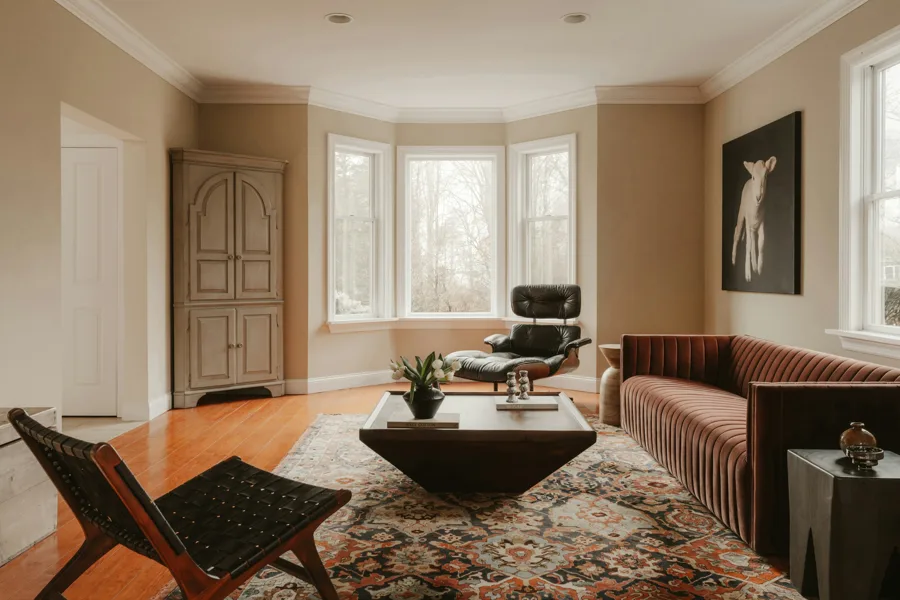

01Understand
AI opportunity
audits.
Look at how work gets done, where time disappears and where AI could help. Leave with a clear set of priorities.
- Workflow and tool review
- Practical use-case mapping
- A prioritised action plan
A clearer way forward.
Practical AI for the way your business works. We find the opportunities, connect your tools and help your team move forward.
01 / What we do
There’s a gap between trying an AI tool and making it useful to a business. We work with you to close it.
Look at how work gets done, where time disappears and where AI could help. Leave with a clear set of priorities.
Connect the right tools and build around your existing processes, with clear checks and a person in control.
Make the change usable. Clear guidance, practical training and support help new ways of working become everyday habits.
02 / The possibilities
Start with a task your team repeats. Build a better way to handle it, then expand from what you learn.
Organise the details, prepare a helpful response and give your team a clear next step.
Email or website form
Extract and summarise
Check, edit and approve
Reply and record the task
03 / Our approach
We start with your business, your people and the way work happens today. The technology follows.
Talk to your team, map the process and agree what a better outcome would look like.
Prioritise the useful opportunities. Agree the scope, data access, responsibilities and success measures.
Start with a focused workflow and test it with the people who will use it. Improve before expanding.
Put the guidance and handover in place. Review how it works and adjust as your business changes.
Technology with a purpose
More space for your people.
More attention for your customers.
That’s what better systems should make possible.
04 / The Ventura family
Ventura Solutions helps businesses work better. Ventura Tours helps people experience their spaces.

360° virtual tours and cinematic films for properties, hotels, restaurants and gyms.
Step inside